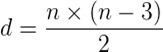
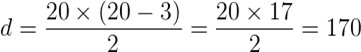
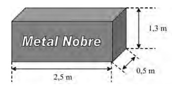

Albert Einstein: “Faça as coisas o mais simples que você puder, porém não se restrinja às mais simples.”
1- Um mestre de obras precisa de um pedaço de madeira cortada em formato de triângulo retângulo, com o maior lado medindo 37 cm, e o menor lado medindo 12 cm. O perímetro desse pedaço de madeira triangular deve ser de:
A) 81 cm
B) 82 cm
C) 83 cm
D) 84 cm
E) 85 cm
1º A questão nos diz que o pedaço de madeira é um triângulo retângulo, ou seja , podemos calcular as medidas dos lados usando a fórmula de Pitágoras:
• Fórmula de Pitágoras : a² = b² + c²
• a = hipotenusa , b = cateto oposto , c = cateto adjacente
2º Vamos jogar as medidas que ele nos deu na fórmula acima:
37² = x² + 12²
1.369 = x² + 144
x² = 1.369 - 144
x² = 1.225
x = √ 1.225
x = 35
3º Calculando o Perímetro:
37 + 35 + 12 = 84cm
GABARITO: LETRA D
2- Duas circunferências concêntricas (de mesmo centro), conforme mostra a imagem, são usadas para determinar a área de um terreno, de modo que a primeira possui raio 10 m, e a segunda, de 15 m. A área entre as duas é o que deve ser determinado. Qual é a área desse terreno? (use π = 3,14)
A) 942,5 m²
B) 628 m²
C) 157 m²
D) 392,5 m²
Para encontrar a área desejada, vamos calcular A1 como área da circunferência maior e A2 como a área da circunferência menor, posteriormente, calcularemos a área desejada
A = A1 – A2.
A1 = πr² = 3,14 . 15²
A1 = 3,15 . 225 = 706,5 m²
Calculando A2:
A2 = πr² = 3,14 . 10²
A2 = πr² = 3,14 . 100 = 314 m²
Por fim, a área desejada:
A= 706,5 – 314 = 392,5
GABARITO: LETRA D
3- (UPF/2009) Se os ângulos externos de um polígono regular medem 18°, então o número de diagonais desse polígono é:
A) 190
B) 170
C) 120
D) 135
E) 162
Para encontrar o número de diagonais temos que saber quantos lados possui esse polígono. Sabendo que a soma dos ângulos externos de um polígono é 360º, assim 360°/18° = 20.
Dessa forma, sabemos que o polígono em questão é um icosaedro, pois possui 20 lados.
O número de diagonais de um polígono pode ser calculado utilizando a seguinte fórmula:

Onde n é o total de lados do polígono. Portanto: 
GABARITO: LETRA B
4- (PM Pará 2012) Um empresário possui um espaço retangular de 110 m por 90 m para eventos. Considerando que cada metro quadrado é ocupado por 4 pessoas, a capacidade máxima de pessoas que esse espaço pode ter é:
A) 32.400
B) 34.500
C) 39.600
D) 42.500
E) 45.400
Resolução:
Vamos calcular a área do espaço:
A = 90 x 110 = 9900 m²
Como cabem 4 pessoas por m²:
Capacidade = 4.9900 = 39600
GABARITO: LETRA C
5- (Enem 2010) A siderúrgica “Metal Nobre” produz diversos objetos maciços utilizando o ferro. Um tipo especial de peça feita nessa companhia tem o formato de um paralelepípedo retangular, de acordo com as dimensões indicadas na figura que segue.
O produto das três dimensões indicadas na peça resultaria na medida da grandeza:
A) massa.
B) volume.
C) superficie.
D) capacidade.
E) comprimento.
O produto das três dimensões (comprimento, largura e altura) resulta no volume do paralelepípedo.
Temos que ter o cuidado de reparar que capacidade ≠ volume! Como o sólido é maciço, não podemos substituir esse “volume” por “capacidade”
GABARITO: LETRA B